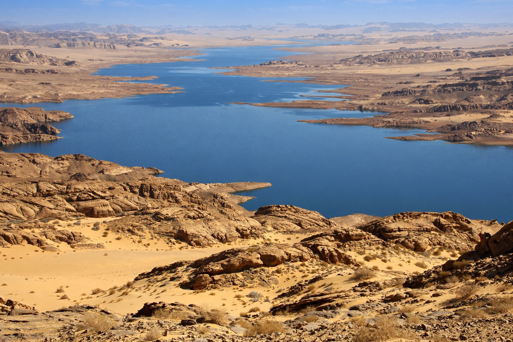

Lake Nasser
From Wikipedia, the free encyclopedia

Lake Nasser (Arabic: بحيرة ناصر) is a vast reservoir created by the Aswan High Dam on the Nile, extending some 550 km from Aswan in Egypt south into Sudan (where its portion is called Lake Nubia). One of the largest artificial lakes in the world by volume (about 132 km³ of live storage), it stores the Nile's floodwaters for irrigation and hydroelectricity — at the cost of submerging Nubia's homeland and archaeological wealth beneath its waters.
Creation and consequences
Filling through the 1970s, the lake displaced over 100,000 Nubians in Egypt and Sudan and required the UNESCO rescue of the Abu Simbel and Philae temples. It ended the Nile's annual flood and its silt deliveries (with consequences for delta erosion and soil fertility), while enabling perennial irrigation, flood control that saved Egypt in the droughts of the 1980s, and a major new fishery.
Management
Evaporation from the desert lake consumes a significant share of the Nile's flow — a standing criticism of the dam's siting — and the reservoir's filling policy is entwined with the politics of Nile waters, from the 1959 Egypt–Sudan agreement to the dispute over Ethiopia's Grand Ethiopian Renaissance Dam upstream.